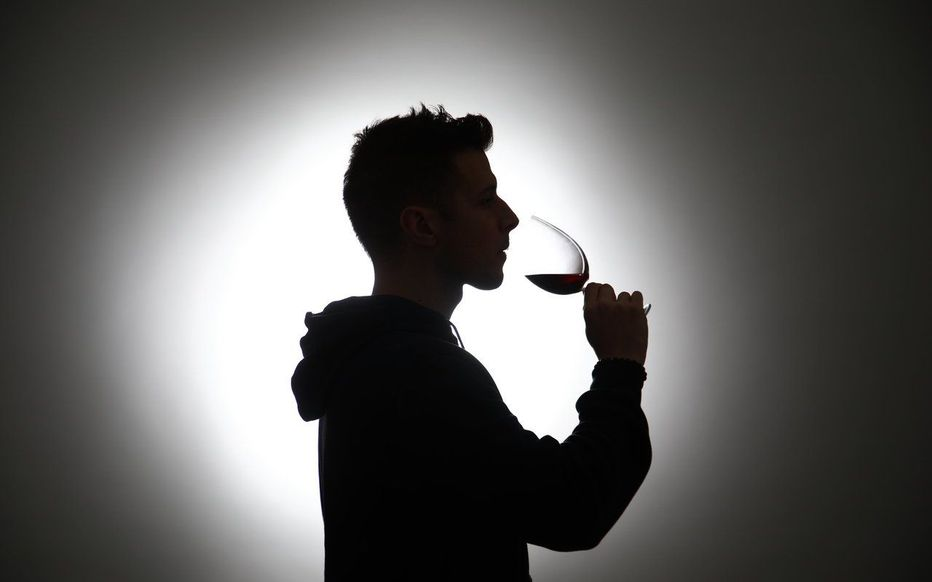

La consommation d'alcool comporte des risques, c'est pourquoi sa vente est très réglementée.
Ainsi en France, certaines boissons avec une teneur en alcool très haute sont interdites à la fabrication et à la vente. De plus les lieux de vente sont très encadrés.
Les alcools prohibés:
Les boissons apéritives à base de vin titrant plus de 18 degrés d'alcool acquis
Les spiritueux anisés titrant plus de 45 degrés d'alcool
Les bitters, amers, goudrons, gentianes et tous produits similaires d'une teneur en sucre inférieure à 200 grammes par litre et titrant plus de 30 degrés d'alcool
L’absinthe, selon certaines modalités de fabrication
L'encadrement des lieux de vente:
Cet encadrement repose sur une classification des boissons. Il existe cinq groupes de boissons:
1-Boissons sans alcool : Eaux minérales ou gazéifiées, jus de fruits ou de légumes non fermentés ou ne comportant pas, à la suite d’un début de fermentation, de traces d’alcool supérieures à 1,2 degré, limonades, sirops, infusions, lait, café, thé, chocolat
2-(abrogé)
3-Boissons
fermentées non distillées et vins doux naturels : vin, bière, cidre, poiré, hydromel, auxquelles sont joints les vins doux naturels, ainsi que les crèmes de cassis et les jus de fruits ou de légumes fermentés comportant de 1,2 à 3 degrés d’alcool,
vins de liqueur, apéritifs à base de vin et liqueurs de fraises, framboises, cassis ou cerises, ne titrant pas plus de 18 degrés d’alcool pur
4-Rhums, tafias, alcools provenant de la distillation des vins, cidres, poirés ou fruits, et ne
supportant aucune addition d’essence ainsi que liqueurs édulcorées au moyen de sucre, de glucose ou de miel à raison de 400 grammes minimum par litre pour les liqueurs anisées et de 200 grammes minimum par litre pour les autres liqueurs et
ne contenant pas plus d’un demi-gramme d’essence par litre
5-Toutes les autres boissons alcooliques, comme le whisky, le gin, la vodka. Lorsqu’une nouvelle boisson apparaît, elle est classée dans la cinquième catégorie. C’est le cas des
boissons dites "premix" (bières mélangées à de l’alcool)
Les autorisations pour vendre des boissons alcoolisées sont basées sur cette classification. Il existe deux licences pour la vente destinée à la consommation sur place:
- La licence de 3e catégorie, dite "licence restreinte", comporte l'autorisation de vendre pour consommer sur place les boissons des groupes un et trois.
- La licence de 4e catégorie dite "grande licence" ou "licence de plein exercice", comporte l'autorisation de vendre pour consommer sur place toutes les boissons dont la consommation à l'intérieur demeure autorisée, y compris celles du quatrième et du cinquième groupe.
De plus, il existe des licences concernant les restaurants (article L3331-2 du code de santé publique : "petite licence restaurant" et "licence restaurant"), les ventes d’alcool à emporter ("petite licence à emporter" et "licence à emporter") ainsi que des dispositions particulières pour les débits de boissons temporaires.
Pour obtenir une de ces licences il faut:
- détenir un permis d'exploitation, valable 10 ans, obtenu au terme d'une formation, portant notamment sur la prévention et la lutte contre l'alcoolisme, la protection de mineurs et la répression de l'ivresse publique, la législation des stupéfiants,
la lutte contre le bruit et les principes de la responsabilité civile et pénale
- effectuer une déclaration préalable à la mairie (ou à la préfecture de police à Paris) au moins 15 jours avant l'ouverture, la mutation (en cas de changement de propriétaire ou de gérant) ou la translation (changement de lieu d'exploitation)
que ce soit dans la même ville ou non. Dans le cas d'une mutation par décès, le délai de déclaration est d'1 mois

Par ailleurs sont interdites:
- La vente ambulante de boissons des 4e et 5e groupes
- La vente via des distributeurs automatiques
- La vente à crédit
- La vente au forfait (formule dits « opens bars »)
- La vente d’alcool réfrigéré dans les stations-service
- La vente d'alcool entre 18h et 8h dans les stations-service
Des infractions aux lois et règlements peuvent entrainer des fermetures administratives ou judiciaires.

La vente d'alcool aux mineurs:
La vente d'alcool aux mineurs est interdite. Il en est de même concernant les offres à titre gratuit de boissons alcoolisées dans les débits de boissons et les commerces ou lieux publics. Le vendeur peut demander à l'acheteur de faire la preuve
de sa majorité en montrant sa carte d'identité. La personne qui vend des boissons alcooliques à des mineurs ou offre ces boissons à titre gratuit à des mineurs, dans les débits de boissons et tous commerces ou lieux publics s'expose à une peine de 7 500 euros d'amende (article L. 3353-3 du Code de la santé publique). Cette amende est portée à 15 000 euros en cas de récidive dans les 5 ans. S'expose à une peine de 15 000 euros d'amende et un an d'emprisonnement la personne qui
fait boire un mineur jusqu'à l'ivresse. Provoquer directement un mineur à la consommation habituelle d'alcool est en outre puni de deux ans d'emprisonnement et de 45 000 euros d'amende (article 227-19 du Code pénal).
L'accès au débit d'alcool aux mineur est également réglementé, ainsi, il est interdit de recevoir dans un débit de boissons des mineurs de moins de 16 ans non accompagnés sous peine de subir l'amende prévue pour les contraventions de 4e classe
et les mineurs de plus de 13 ans, même non accompagnés, peuvent en revanche être reçus dans les débits de boissons assortis d'une licence de 1ère catégorie (prévue pour les boissons sans alcool).
Mais dans tous les cas, la personne poursuivie
peut éviter une condamnation lorsqu'elle prouve qu'elle a été induite en erreur sur l'âge du mineur, sur la qualité ou l'âge de la personne l'accompagnant ou sur l'état du malade.